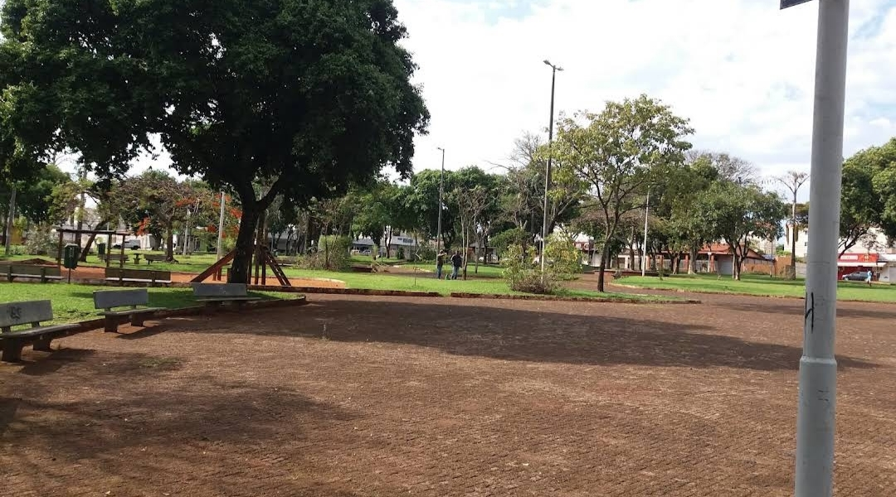

Sobre a praça
A Praça Américo Ferreira de Abreu é um dos principais pontos de convivência, lazer e integração comunitária do bairro Santa Mônica, in Uberlândia. Reconhecido por sua atmosfera acolhedora e densamente arborizada, o espaço desempenha um papel fundamental na saúde urbana dos moradores locais, atuando como um refúgio verde que estimula a prática de exercícios e o descanso ao ar livre.
Ler História Completa
Uso Comunitário e Ecossistema
Mais do que uma área de passagem, a praça carrega uma forte vocação de convivência social e preservação ambiental para o bairro Santa Mônica. Seus principais pilares de apropriação são:
- Eventos e Integração Local: Devido à proximidade com a Paróquia Matriz Santa Mônica, o espaço da praça é frequentemente utilizado como extensão comunitária para a realização de tríduos, festividades religiosas e feiras beneficentes ao ar livre.
- Refúgio de Biodiversidade: A praça conta com árvores de médio e grande porte integradas à fauna urbana regional, servindo de abrigo e descanso para espécies de pássaros nativos no meio da malha urbana de Uberlândia.
- Potencial de Requalificação: Por focar no convívio e no ecossistema, o espaço é o cenário ideal para projetos ambientais, plantio de mudas do Cerrado e encontros socioculturais dos moradores.
Eventos cadastrados
Filtre a agenda e visualize as solicitações salvas neste navegador de forma dinâmica.
Pavilhão Multiuso de Apoio
Como elemento central da proposta de requalificação urbana desenvolvida pela Elo Arquitetura e Urbanismo, o novo pavilhão foi concebido para dar suporte logístico e infraestrutura técnica adequada às festividades tradicionais do bairro Santa Mônica.
Estrutura Leve e Sustentável: Cobertura modular projetada para captação de água pluvial e proteção solar, gerando conforto térmico sem agredir a vegetação arbórea existente.
Infraestrutura Técnica: Pontos embutidos de energia elétrica, iluminação em LED cenográfica e conexões hidráulicas planejadas para atender barracas de feiras e palcos temporários.
Acessibilidade Universal: Piso plano intertravado tátil integrado às rotas principais da praça, facilitando a circulação de pedestres, idosos e cadeirantes em dias de grande fluxo.
Evolução do Espaço Urbano
Compare o levantamento fotográfico do estado atual com o modelo tridimensional das melhorias propostas.
Estado Atual da Praça
Diagnóstico de calçadas danificadas, áreas com desgaste de solo e pontos escuros com necessidade de reforço luminotécnico.
Projeto em Desenvolvimento
Nova paginação de piso tátil, preservação total da cobertura vegetal nativa, mobiliário urbano sustentável e iluminação eficiente.
ENCONTRE A PRAÇA
Venha conhecer.
Como chegar de transporte público:
A praça conta com pontos de ônibus muito próximos nas avenidas do entorno. Você pode utilizar as linhas de transporte coletivo de Uberlândia que atendem a região do Santa Mônica, como as linhas A105, T610, I231 ou I232.
SUA VOZ IMPORTA
Ajude-nos a melhorar a praça
Horário de Atendimento: 12h às 17h